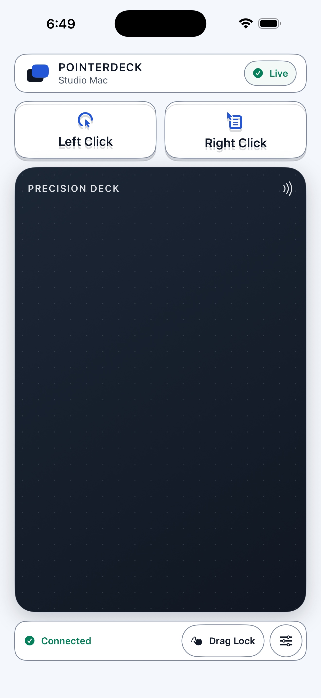
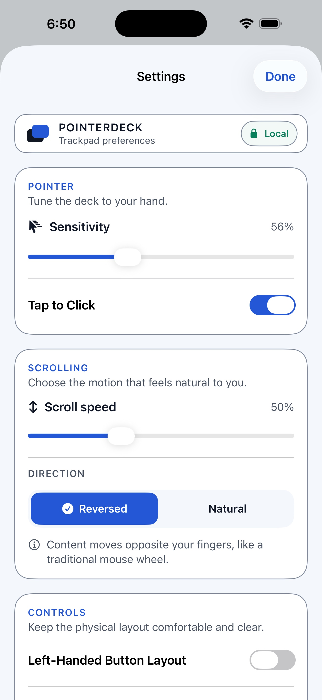

Trackpad essentials
One-finger pointer movement, two-finger scrolling, dedicated left and right click, tap-to-click, and Drag Lock.
iPhone and iPad trackpad
Move, click, scroll, and drag from a focused touch surface. PointerDeck uses the free PointerDeck Receiver and a direct connection on the same local network.
Free. No in-app purchases. The iPhone or iPad app and Mac Receiver work together.
The real app
The same focused controls scale from iPhone to iPad. Dedicated clicks stay above the trackpad, while connection status and Drag Lock stay close without getting in your way.



Focused by design
PointerDeck is not a remote desktop. It does not stream or display the Mac screen. The release is built around pointer feel, clear click surfaces, scrolling, dragging, and returning to a trusted Mac.
One-finger pointer movement, two-finger scrolling, dedicated left and right click, tap-to-click, and Drag Lock.
Adjust movement and scroll speed, choose Natural or Reversed scrolling, and switch to a left-handed layout.
Controller traffic goes between your devices and is encrypted on the local network. There is no PointerDeck cloud account.
Animated walkthrough
Real PointerDeck app screens, illustrated devices, and animated gestures show how it works. Requires the free Mac Receiver and the same local network.
See pairing, pointer movement, clicks, scrolling, Drag Lock, and trusted-device reconnection.
The same walkthrough in a vertical format, with upbeat original music.
Set up once
Download the free notarized Mac receiver, move it to Applications, and grant Accessibility so it can move and click the pointer.
Create an 8–12 digit Connection PIN with at least five different digits. Repeated and sequential patterns are rejected. The Mac accepts the PIN only while Add Device is open for up to two minutes.
Select the nearby Mac and enter its PIN. A separate trusted credential supports later reconnection when both apps are open and reachable.
Requirements
Free and focused
No account, ads, in-app purchases, subscription, or screen streaming.